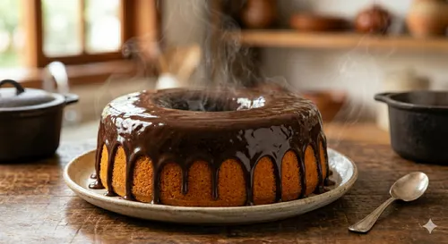

Bolo de Cenoura

Ingredientes
- 3 cenouras médias picadas
- 3 ovos
- 1 xícara (chá) de óleo
- 2 xícaras (chá) de açúcar
- 2 xícaras (chá) de farinha de trigo
- 1 colher (sopa) de fermento em pó
Cobertura
- 1 xícara (chá) de açúcar
- 1 caixinha de creme de leite
- 3 colheres (sopa) de chocolate em pó
- 1 colher (sopa) de manteiga
Modo de preparo
- No liquidificador, bata as cenouras, os ovos e o óleo até obter uma mistura homogênea.
- Transfira para uma tigela e adicione o açúcar, misturando bem.
- Acrescente a farinha de trigo aos poucos, mexendo sem parar.
- Por último, adicione o fermento e misture delicadamente.
- Despeje a massa em uma forma untada e enfarinhada.
- Asse em forno médio 180 °C, preaquecido, por aproximadamente 40 minutos ou até que um palito saia limpo.
- Para a cobertura, misture todos os ingredientes em uma panela e leve ao fogo médio, mexendo até engrossar.
- Despeje a cobertura quente sobre o bolo ainda na forma.